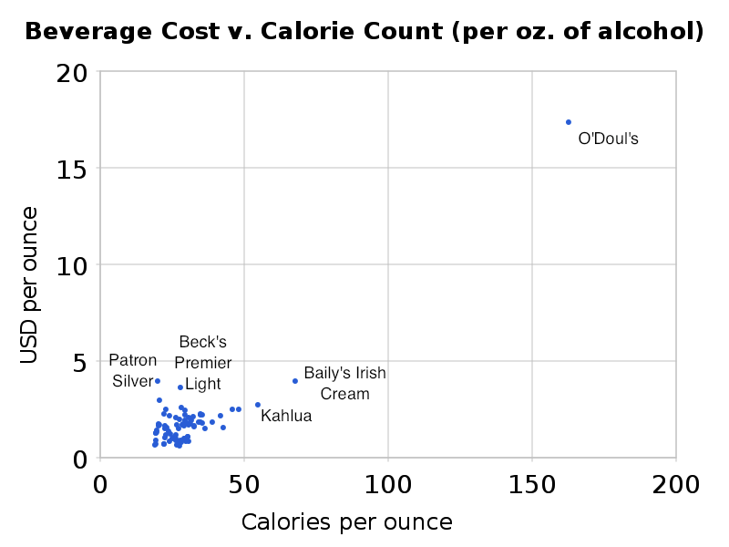
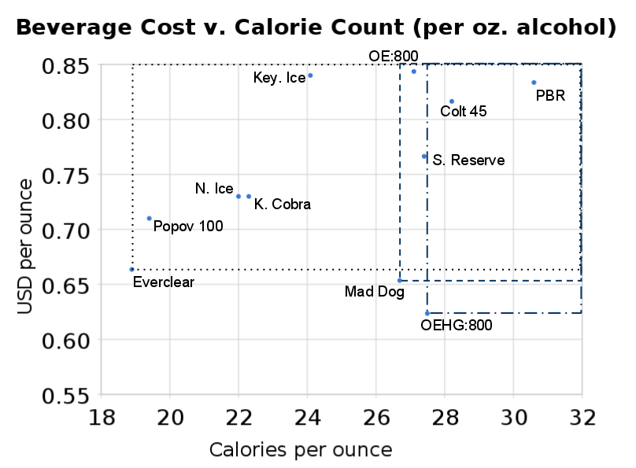
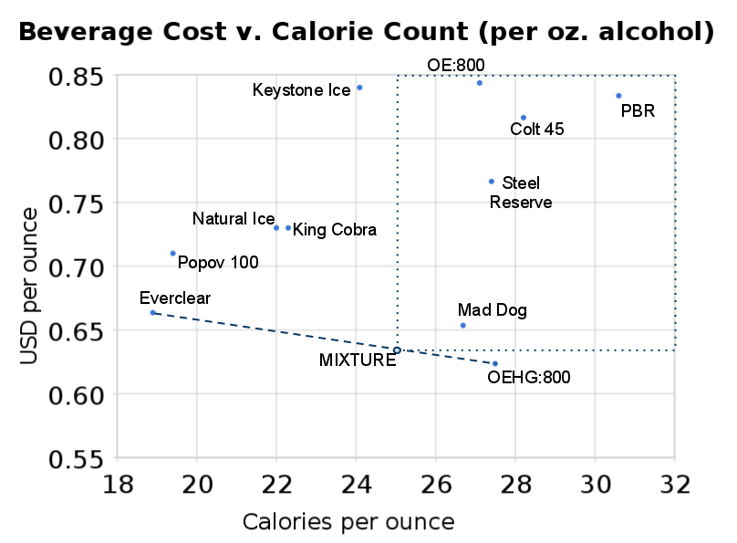

Get Drunk But Neither Broke Nor Fat
I'm about to make a case that Everclear, Mad Dog 20/20 (Grape), and Olde English High Gravity 800 are the only three beverages that matter. And that you should save the Mad Dog just for special occasions.
[A QUICK ASIDE: This is a webpage where I have fun with some data analysis games at the expense, perhaps, of the serious issue of problem drinking. Lemme push onto you a brief argument made in favor of higher alcohol taxes, and here's a 2009 paper about how widespread and sustained excessive drinking in Moscow has led to a disastrously unnecessary amount of violent crime.]*
There exist two websites, Get Drunk Not Broke and Get Drunk Not Fat. Each showcases, respectively, the cost or calorie count of around a hundred-odd separate drinks, normalized by the drink's alcohol content (in ounces). This gives you a nice ordered list: if all you want is to take in alcohol while consuming the fewest possible calories, Get Drunk Not Fat has a clear winner for you. (It's Franzia Red.) Similarly, if all you want is to take in alcohol while spending the least amount of money, Get Drunk Not Broke recommends Everclear.
What's less obvious is what drinks are allowed if we want to meet both these objectives: to spend less money and consume fewer calories all while holding the amount of alcohol imbibed constant. As best I could, I combined the data from the two sets to give us a comprehensive look at each drink along both dimensions.** Here's a scatter plot of the 78 candidate drinks:

I've marked some outliers: O'Doul's, the famously non-alcoholic beer, stands out pretty handily as the costliest/fatteningest possible way to get drunk. Bailey's, the second most caloric, is also close to being more expensive than any other non-O'Doul's option. (Patron Silver Tequila is rated as barely, just barely, more expensive.)
What one can notice here is that this view gives us a sense in which one drink is "better" than another. If all one cares about is (a) consuming ounces of alcohol while (b) minimizing caloric intake and (c) minimizing dollars spent, then Bailey's is plainly a better choice than O'Doul's. It's both less costly and has less calories, per ounce of alcohol. Similarly, Kahlua dominates both Bailey's and O'Doul's.
You can't, however, necessarily say that Patron Silver dominates Beck's Premier Light. Patron has fewer calories but costs more. It's not unreasonable for two people who both believe in (a), (b), and (c) to have a different set of priorities, and the one who strongly prefers spending money over consuming calories would reasonably the Patron, while the one with an opposite sense of priority would be just as reasonable in picking the Beck's.
If we carry this to it's logical conclusion, we should imagine that there are only a few drinks in our dataset which are not dominated by any other drink. If we zoom in on our above plot, we'll see:

Like I mentioned earlier: the three undominated beverages are Everclear, Mad Dog (20/20), and Olde English High Gravity 800.*** It's pretty neat that these three just so happen to be: a terrible tasting hard liquor, a terrible tasting approximation of wine, and a terrible tasting beer (malt liquor, but close enough). We've covered all the major booze food groups!
You noticed that I've added to the scatterplot a rectangle for each of these three drinks. These rectangles represent the "zone of domination" for our final three: any beverage caught in, for example, the dash-dot rectangle is a beverage both higher in calories and more expensive (when normalizing for alcohol content) than Olde English High Gravity. Anyone who believes exclusively in (a), (b), and (c) should strongly consider trading their King Cobra for Everclear, their Steel Reserve for either Everclear or Mad Dog, and their Pabst Blue Ribbon for any of the undominated three. (Just to clarify: I've drawn it such that the rectangles have a truncating border at the edge of the graph, but you should imagine seeing these rectangles extend infinitely far both upwards and rightwards, meaning all three rectangles also contain the O'Douls point and more.)
So far, we've considered only whole beverages, standing on their own. But if we now allow ourselves the possibility of mixing two beverages, a new opportunity arises. Since we know at this point we can ignore any drink but Everclear, Mad Dog, and Olde English High Gravity (these three dominate all the others), let's consider combining Everclear and the OEHG.****
If we mixed these two, we'd have effectively drank a beverage which, on balance, cost less than pure Everclear but had fewer calories than pure OEHG. (The pessimist rightly points out by the same token that the concoction would also cost more than the OEHG and be more fattening than the Everclear.) Here's what mixing would mean for our scatterplot:

Any OEHG/Everclear mixture would wind up somewhere on that dotted blue line between them. The point I've marked "MIXTURE" here asks that the ratio of ounces of alcohol obtained from the OEHG to ounces obtained from the Everclear be about 2.5:1. I've given this point it's own rectangle to make it clear: the mixture now dominates the Mad Dog -- the Mad Dog 20/20 is no longer undominated.
Given that they can be combined, Everclear and Olde English High Gravity 800 are the only two drinks a believer of exclusively (a), (b), and (c) would ever need. Together they form a dominant pair. I think this is pretty strong evidence for why (a),(b), and (c) are together pretty infrequently exclusively believed.
Brian Gawalt
bgawalt@gmail.com
September 24, 2010
https://gawalt.com/brian/
https://www.twitter.com/bgawalt/
______________________
* At first I thought maybe the classy thing to do would be to throw up a link to donate to Alcoholics Anonymous, but then I discovered on page 17 of this PDF that donations aren't accepted from non-members. It's not often that I learn things that leave me less cynical, and I tend to want to pass them on.
** Unfortunately, there's not a perfect matchup between the two sites. Not all the beverages for which I found calorie information also had pricing information. It's possible that a fuller dataset would produce a different set of undominated drinks. Who knows where Franzia would land in our scatterplot? All the same, these 78 still represent a strong sampling of the world of low- to mid-range booze. You can look at the raw numbers here.
*** With the scale of all the data values, it's hard to show that Everclear, Mad Dog, and OEHG are all left undominated. You can check it easily numerically; here's a Python script which does just that in conjunction with the datafile above.
**** Mixing isn't meant necessarily in the sense of pouring both in the same cup; the old standby of shot-and-a-chaser would work just as well, so long as the proportions were kept on the level.
Return to gawalt.com/brian